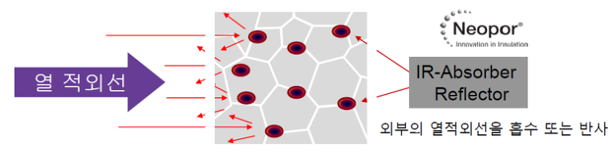
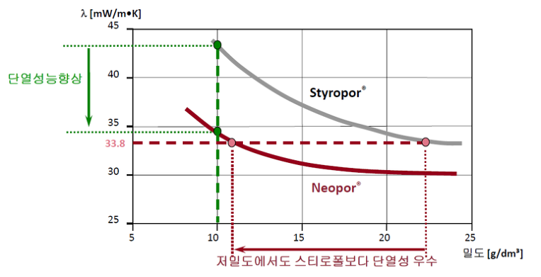

네오폴은 Neopor®내에 있는 열적외선 흡수체가 개선된 단열성능을 보증하여 기존 스티로폴대비 최소 20%의 단열두께를 줄일 수 있게 되어 원료사용 절감 및 주거공간을 늘릴 수 있는 획기적인 제품입니다.
또한 자기소화성 성능 부여를 위한 HBCD 난연제를 국내 최초로 친환경 난연제(Polymeric FR)로 적용하여 단열성을 더욱 향상시켰습니다.
친환경 난연제
독일 BASF 네오폴(비드법2종)에
특수 난연코팅과 난연액도포를 통해 생산한
준불연 가등급 EPS 단열재 DK보드
건축용 / 외단열용 / 판넬용
문의 1855-2240